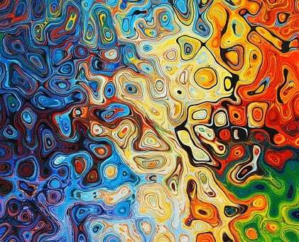
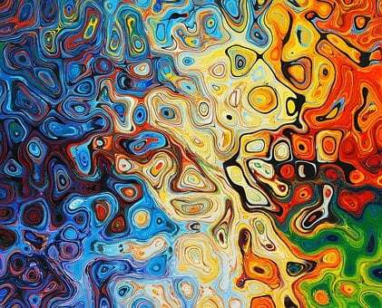
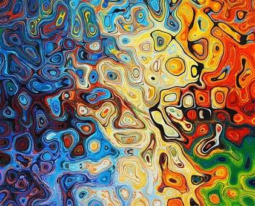

Gallery


 



Hi Amigos!! Welcome to our painting store.You will find various styles of paintings here like abstract,canvas,geometric paintings. Buy paintings online. Beautiful collection of wall art prints and paintings for home and office decor. Over 3+ lakh artworks, 4500+ artists, and 70+ categories to pick from.Let your walls do the talking with handpicked artworks from acclaimed painters, art galleries and emerging artists from around the world. Browse through stunning paintings spanning traditional, abstract, and modern styles.The Digital Collection is the main research platform for the Städel Museum’s entire collection. Each work is digitised, described and indexed with metadata and, in many cases, also supplemented by additional information, video and audio contributions. This gives art lovers worldwide an unlimited access to all works in the Städel Museum’s collection, including those not on display. Would you like to know more about the innovative concept behind the digital access to the Städel Museum’s collection?Through the years of stress, deadlines, and fake smiles, the secret treasure trove of childhood memories, somehow gets lost inside us. We grow up, suppressing the children inside of us. Yet, the longing to go back to being children never dies. Childhood memories are always special. Do you remember the time your mother used to wake you up in the morning for school? Or the time you used to visit the market with your father, looking at fruits and vegetables, pretending like a grown-up? Do you remember the time you used to bake a cake with your mother or the time your grandmother used to sing you to sleep, pamper you with chocolates and gifts? Little did you know that you will grow up one day before you would know. Then, all the memories would be trapped inside the little room you have inside your heart like it is right now. These memories bring joy to our hearts and make it easier for us to go through the drudgery of everyday existence. Such fond memories on your walls would remind you every day, of the time that is gone but a time that is still preserved in paintings and photographs. Make Your Memories Alive With Childhood Paintings Have you ever looked at a child and marveled at his or her innocence and wisdom? Have you ever felt bliss surging through your veins just looking at a child laugh? Now, think about the innocent, small laughing faces on the walls of your loving home. Having a wide collection of such sweet memories would bring positivity to the household and make every day fresh and vibrant. It would also bring out the softness of your heart and make your walls look beautiful. You can choose from various ideas, from siblings drenched in the rain to a child with her mother and what not! Giving gifts of paintings of children is also a nice idea, especially for would-be mothers and fathers. This would bring a sense of happiness, bliss, and positivity to their lives. This children’s day, get yourself paintings of children to celebrate childhood and its fond memories. Relive your childhood through these paintings and perhaps even cry tears of nostalgia. Childhood is always a time that is dear to us, even if we grow old, the children inside us will never. Buy authentic childhood paintings Online With Ganesh Chaturthi around the corner, people are excited to celebrate one of the most awaited festivals. At some places, the celebration is for 3 days while some continue even for 10 days. Idols of Ganesha will be brought into houses and everyone will worship them before immersing them in water for good luck. In light of this, have you ever thought about having Ganesha paintings along with idols in your house? Everyone wants their house to be a place to relax and unwind. And what more than a Ganesha painting can make your home even more auspicious. Lord Ganesha, the elephant-headed God with four hands and a mouse as his Vahan is one of the most worshipped Gods in Hinduism. The elderly worship him for his spirituality while the children love him for his tales and appearance. All this make up the significant reasons why idols, sculptures, and paintings of Lord Ganesha are highly considered and praised for worshipping and home embellishment. The small eyes reflect his dedication and big ears denote listening attentively to gain more wisdom. The smallmouth denotes that you should honor our words and become a person who follows and does what we say. This will help you become a balanced and wise individual. You will come across good as well as bad things in your life. His big belly indicates that every person should make him capable of taking in all the positives and negatives of life. The invincible presence of Lord Ganesha is denoted in his four arms. One arm holds an axe symbolizing that a person should remove all the attachment bonds to gain serenity in life. The lotus on one hand represents piousness and treasures of life, even when you are facing bad situations or challenges. The whole body of Lord Ganesha has been known to represent the complete cosmos. All this makes Lord Ganesha a prominent God figure in Hinduism. Having a painting of Ganesha would bring all the positivity and values to your home and life. Therefore, get the finest Lord Ganesha paintings from Gallerist for you today. Whether you want it for yourself or gift it to your loved ones, Ganesha paintings make the finest choice you can make. Bring together the auspiciousness and spirituality of Ganesha in your house and feel the happy and positive vibes all along. Indian folk art has evolved significantly over years, some with a hint of modernization while some remained purely untouched. Whatever remains are the unique, admirable, and inimitable folk art we know today. Here is a glimpse of the top 10 Indian folk arts that are still kept alive in culture in different parts of the country. 1.Miniature Paintings Originating around the 16th century, the features of these paintings are their miniature size and intricate details along with the acute expressions. The art form is popular and practiced widely in Rajasthan. 2. Phad A religious form of scroll painting, Phad originated in Rajasthan and depicts the stories of Mahabharata and Ramayana. The characteristics of these paintings are vegetable colors and running narratives of various deities and heroic deeds. Every inch of the painting is crowded with figures and pictorial representations of mythological stories. 3. Gond The Gondi tribe in Madhya Pradesh is credited for creating these vibrant and bold colored paintings significantly depicting nature. Signature patterns and lines are the eminent features of Gond paintings. The colors are drawn from leaves, charcoal, cow dung, and colored soil. However to reduce the cost of the painting Gond artists are moving to poster colors and canvas. 4. Kalamkari With its name originating from Persian, Kalamkari originating from Machilipatam is called Machilipatam, and one originating from Chittoor is called Srikalahasti. Both types originate from the state of Andhra Pradesh. Kalamkari means the use of pen for freehand drawing of the subject and filling colors, which is entirely hand worked. 5. Madhubani Originated in present-day Bihar and Nepal, Madhubani paintings are also called Mithila art. It is characterized by geometric patterns and is one of the most popular Indian folk art forms widely depicting Gods and Goddesses. 6. Warli Warli tribes from the Western Ghats of India are accredited for one of the oldest art forms of India, Warli. Triangles, circles, and squares form the main feature of these paintings. The Central motif in the painting is surrounded by scenes portraying fishing, dancing, farming, and marriage ceremony. The tarpa dance is one of the most recurring figures in the Warli paintings. 7. Cheriyal Scrolls With its roots in present-day Telangana, Cheriyal Scrolls is a revamped version of nakashi art. With a scroll length of 40-45 feet, the paintings usually depict or feature Indian mythology such as the Krishna Leela, Mahabharata, Ramayana, and Shiva puranam, compared to the long scrolls in the past, now artists have adapted to using smaller scrolls that depict only single episode or few characters from the traditional stories. Cheriyal painting is easily recognized by certain characteristics such as the use of red color in the background. 8. Kalighat Characterized by vibrant colors and bold outlines Kalighat paintings thrived in the 19th century around the Kali temple in Kolkata. Initially depicting Gods and Goddesses, these paintings took a sharp turn towards social reform eventually. This type of painting continues to influence and charm artists and art lovers all over the world. 9. Patachitra Hailing from West Bengal and Odisha, Patachitra is a form of cloth-based scroll painting. Originating from the fifth century, it depicts Gods and Goddesses through angular, sharp, and bold strokes and lines. 10. Tanjore
